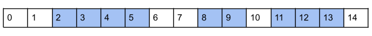
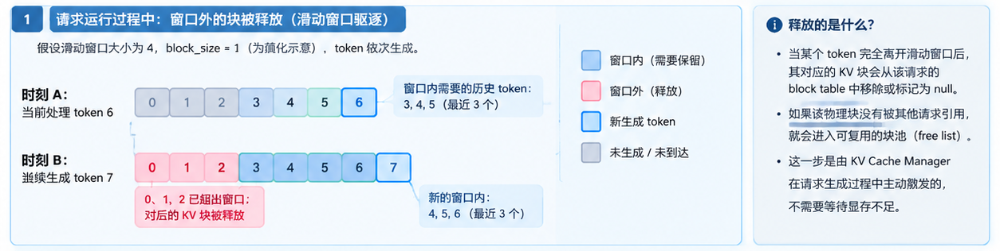

vllm
存储上保留和full-attention一样的模式，区别在于对于SWA的group中的逻辑块（block）大小与full-attention group的存在差异，整体存放的大小包括窗口大小与额外保留大小
def num_retained_tokens(self) -> int:
"""Tokens below a request's first scheduled position that must stay
readable. The worker nulls a step's block-table entries wholly below
that many tokens.
"""
return self.sliding_window - 1 + self.extra_retained_tokens在进行前缀缓存的判断时，manager根据当前候选命中长度，从右至左依次按粒度比较window是否命中，存在未命中则退至下一个候选命中长度位置。
例如：

缓存命中前缀可能有 3 种：
- 缓存命中长度为 5，计算预填充 [2, 3, 4] → [5, 6, …, 14]
- 缓存命中长度为 6，计算预填充为 [3, 4, 5] → [6, 7, …, 14]
- 缓存命中长度为 14，使用 [11, 12, 13] → [14] 进行预填充（效率最高）
驱逐方面采用窗外 + LRU两种模式同时进行，一方面对保留大小外的块进行驱逐，另外配合LRU的策略。
